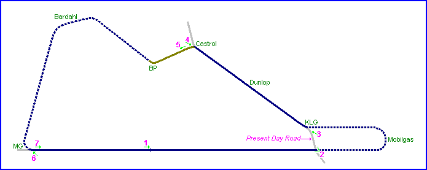
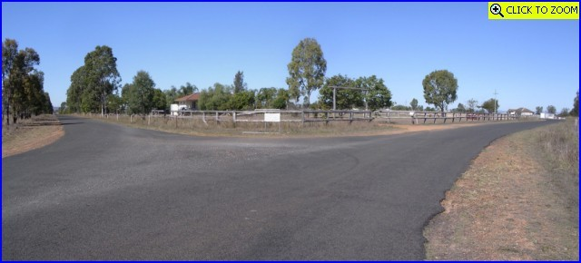
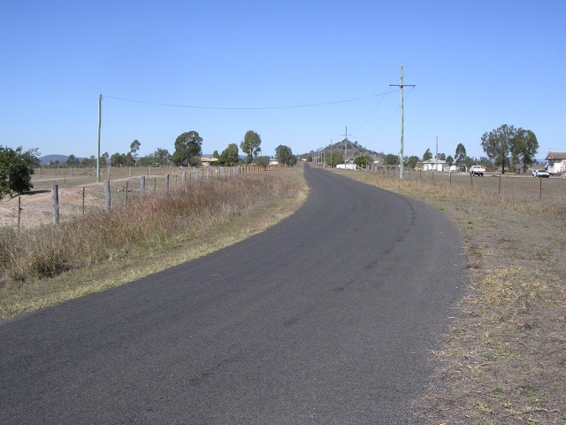
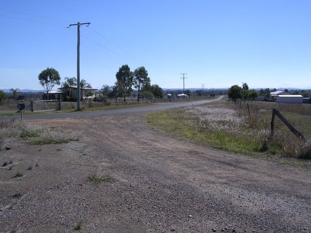
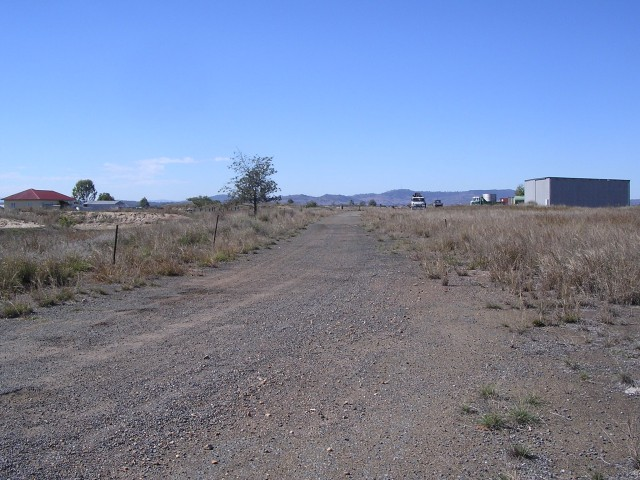
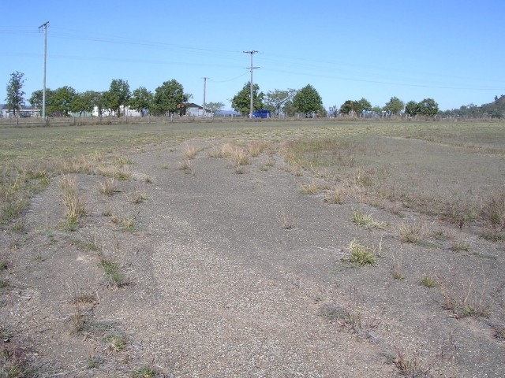
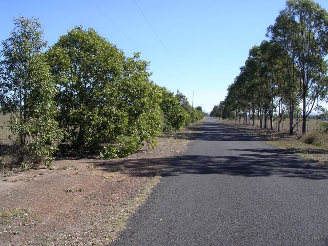

| Map of circuit location & Aerial photo of circuit | ||
Lowood, Australia
| Type: | Airfield Circuit | |
| Length: | 4.400 Miles / 7.081 km | |
| Used: | 1948-1966 | |
| Photos Taken: | 8th August, 2005 |
Numbers and arrows on the map represent the location where the
photographs were taken. scroll down to view the photos

Return to racingcircuits.net's Photo Archive Main Index

1 - Start/Finish area on Daisy Road. The original runway was much wider
than the present day road, stretching into the property to the left of the photo

2 - Present day intersection. The main straight back down to MG is to the
left, while the new road leads up to the old KLG corner on the right. [click here to zoom in]

3 - Present day road leading up the Dunlop Straight at the site of KLG
corner. The road from Mobilgas joined here to the right of the photo.

4 - Castrol Corner, looking down the Dunlop Straight to KLG.

5 - Looking towards BP Corner.

6 - From the top of the Main Straight, MG Corner is still just visible in
the field.

7 - Top of the Main Straight, now Daisy Road.
Photos of circuit & airfield heritage marker >>
Photographs and information kindly supplied by Neil Fackerell